승강기기능사 (2006-04-02 기출문제)
1과목: 승강기개론
1. 주차장치 중 다수의 운반기를 2열 혹은 그 이상으로 배열하여 순환이동하는 방식은?
- 수직순환식
- 다층순환식
- 수평순환식
- 승강기식
(정답률: 45%)

2. 엘리베이터의 도어에는 승객의 안전을 보호하기 위해서 여러 가지 장치가 설치되어 있는데 이에 해당하지 않는 것은?
- 스윙도어시스템에 의한 보호
- 세이프티 슈에 의한 보호
- 광선 빔에 의한 검출
- 초음파 장칭 의한 검출
(정답률: 59%)
3. 에스컬레이터에서는 속도와 트러스의 경사각도를 일반적으로 어떻게 하는가?
- 속도 20m/min, 경사각도 50도
- 속도 30m/min, 경사각도 30도
- 속도 40m/min, 경사각도 10도
- 속도 50m/min, 경사각도 20도
(정답률: 83%)
4. 카 상부에 설치되는 안전 스위치는?
- 비상안전스위치
- 카 천장스위치
- 비상구출구 스위치
- 카 비상점검스위치
(정답률: 47%)
5. 엘리베이터의 브레이크장치에 관한 설명 중 옳은 것은?
- 승용 엘리베이터는 125%의 적재하중을 싣고 정격속도 하강시 안전하게 감속, 정지하여야 한다.
- 승용 엘리베이터는 140%의 적재하중을 싣고 정격속도 하강시 안전하게 감속, 정지하여야 한다.
- 화물용 엘리베이터는 140%의 적재하중을 싣고 정격속도 하강시 안전하게 감속, 정지하여야 한다.
- 화물용 엘리베이터는 150%의 적재하중을 싣고 정격속도 하강시 안전하게 감속, 정지하여야 한다.
(정답률: 69%)
6. 에스컬레이터의 안전장치에 해당되지 않는 스위치는?
- 인렛트스위치(inlet switch)
- 비상스위치(emergency switch)
- 업다운키스위치(up down key switch)
- 스커트가드안전스위치(skirt guard safety switch)
(정답률: 59%)
7. 승강기의 주 로프(Main Rope)에 관한 설명으로 틀린 것은?
- 특별한 경우를 제외하고는 직경이 12㎜ 이상이다.
- 로프 중심부에서 기름이 스며나와 소선이 녹이 스는 것을 막는다.
- 로프 마모율이 10% 이상이면 교체해야 한다.
- 로프의 부식방지를 위해서는 구리스를 바른다.
(정답률: 41%)
8. 비상정지장치에 관한 설명 중 옳은 것은?(오류 신고가 접수된 문제입니다. 반드시 정답과 해설을 확인하시기 바랍니다.)
- F.W.C형 비상정지장치의 동작곡선은 정지력이 정지 거리에 비례하여 정지할 때까지 커진다.
- F.G.C형 비상정지장치는 동작 개시후 일정거리까지는 정지력이 거리에 비례하여 커진다.
- 순간식 비상정지장치는 정지력이 거리에 비례하여 커지다가 일정하게 된다.
- 슬랙로프 세이프티(Slack Rope Safty)는 고속 대형 엘리베이터에 주로 사용하는 순간식비상정지장치이다.
(정답률: 44%)
9. 실린더와 플런저가 들어가는 부분은?
- 케이싱
- 유니트
- 플래트
- 스탭
(정답률: 31%)
10. 승강기 기계실에 설비되어서는 아니되는 것은?
- 승강기 제어반
- 환기설비
- 옥탑 물탱크
- 조속기
(정답률: 85%)
11. 비상용 엘리베이터의 정전시 예비전원의 기능에 대한 설명으로 옳은 것은?
- 30초 이내에 전력이 자동 발생하여 1시간 이상 작동 하여야 한다.
- 40초 이내에 전력이 자동 발생하여 1시간 이상 작동하여야 한다.
- 50초 이내에 전력이 자동 발생하여 2시간 이상 작동하여야 한다.
- 60초 이내에 전력이 자동 발생하여 2시간 이상 작동하여야 한다.
(정답률: 79%)
12. 먼지나 모래, 콘크리트 파편 등의 이물질이 실린더내에 들어가지 않도록 플런저의 표면에 밀착하여 이물질을 제거하는 것은?
- 패킹
- 그랜드메탈
- 더스트 와이퍼
- 스트레이너
(정답률: 51%)
13. 교류 이단속도제어에서 고속권선으로 제어하지 않는 것은?
- 가속
- 기동
- 고속 주행
- 저속 주행
(정답률: 59%)
14. 엘리베이터의 속도에 영향을 미치지 않는 것은?
- 감속기
- 편향 도르레의 직경
- 전동기 회전수
- 권상 도르레의 직경
(정답률: 61%)
15. 조속기는 무엇을 이용하여 스위치의 개폐작용을 하는가?
- 응력
- 원심력
- 마찰력
- 항력
(정답률: 70%)
2과목: 안전관리
16. 엘리베이터를 속도로 분류할 때 중속도 엘리베이터는?
- 60~1⑤m/min
- 70~130m/min
- 80~150m/min
- 90~180m/min
(정답률: 63%)
17. 로프식 승객용승강기에서 주 시브(main sheave ) 직경은 주로프(main rope) 직경의 몇 배 이상으로 하여야 하는가?
- 5
- 10
- 40
- 60
(정답률: 57%)
18. 카실과 승강로 벽과의 수평거리를 125㎜ 이하로 하지 않아도 되는 승강기의 종류는?
- 전망용
- 비상용
- 화물용
- 승객ㆍ 화물용
(정답률: 44%)
19. 저압 부하설비의 운전조작 수칙에 어긋나는 사항은?
- 개폐기의 조작은 왼손으로 하고 오른손은 만약의 사태에 대비한다.
- 개폐기는 땀이나 물에 젖은 손으로 조작하지 않도록 한다.
- 퓨즈는 비상시라도 규격품을 사용하도록 한다.
- 정해진 책임자 이외에는 허가없이 조작하지 않는다.
(정답률: 78%)
20. 기계기구에 대한 방호조치의 짝으로 옳은것은?
- 리프트-조속기
- 에스컬레이터-파킹장치
- 크레인-역화방지기
- 승강기-과부하방지장치
(정답률: 65%)
21. 안전점검을 위한 점검표의 작성방법으로 적당하지 않은 것은?
- 내용은 구체적이고 재해방지의 실효가 있어야 한다.
- 중점도가 높은 것부터 작성한다.
- 현장 감독자용 점검표는 쉬운 표현으로 한다.
- 양식에 구애받지 않도록 한다.
(정답률: 69%)
22. 에스컬레이터의 이동용 손잡이에 대한 안전점검 사항이 아닌 것은?
- 균열 및 파손 등의 유무
- 손잡이의 안전마크 유무
- 디딤판 속도와의 동일 유무
- 손잡이가 드나드는 구멍의 보호장치 유무
(정답률: 66%)
23. 전선로의 정전작업을 할 때에는 접지를 한다. 이 접지의 목적이 아닌 것은?
- 현장에 검전기가 없으므로 정전의 확인용으로 접지한다.
- 인접 선로의 유도전압에 의한 유도쇼크를 방지하기 위하여 접지를 한다.
- 정전되었다 하여도 오통전으로 인한 감전방지를 위하여 접지한다.
- 정전을 확인하였으나 역송전으로 인한 감전방지를 위하여 접지한다.
(정답률: 61%)
24. 카 상부에서의 작업시 안전수칙으로 잘못된 것은?
- 외부인이 접근하지 못하도록 해야 한다.
- 운전 선택스위치는 자동으로 설치한다.
- 로프를 손으로 잡지 않도록 한다.
- 신발은 미끄러지지 않는 작업화를 신어야 한다.
(정답률: 77%)
25. 사고원인에 대한 사항으로 틀린 것은?
- 교육적인 원인 : 안전지식 부족
- 인적원인 : 불안전한 행동
- 간접적인 원인 : 고의에 의한 사고
- 직접적인 원인 : 환경 및 설비의 불량
(정답률: 73%)
26. 방호장치에 대하여 근로자가 준수할 사항이 아닌 것은?
- 방호장치에 이상이 있을 때 근로자가 즉시 수리한다.
- 방호장치를 해체하고자 할 경우에는 사업주의 허가를 받아 해체한다.
- 방호장치의 해체 사유가 소멸된 때에는 지체 없이 원상으로 회복시킨다.
- 방호장치의 기능이 상실된 것을 발견하면 지체없이 사업주에게 신고한다.
(정답률: 67%)
27. 안전사고의 발생요인으로서 심리적인 요인으로 생각되는 것은?
- 감정
- 극도의 피로감
- 신경계통의 이상
- 육체적인 능력 초과
(정답률: 70%)
28. 다음 중 전기사고의 방지대책이 아닌 것은?
- 방전장치의 시설
- 누전 개소의 조기 발견
- 전기의 사용 억제
- 규격 전기용품의 사용
(정답률: 75%)
29. 도어 시스템에서 S 로 표현되는 것은?
- 중앙열기 문
- 가로열기 문
- 외짝 문 상하열기
- 2짝 문 상하열기
(정답률: 68%)
30. 주로프는 단말처리를 양호하게 하여야 안전을 유지할 수 있다. 단말처리부분을 점검하여야 할 항목이 아닌 것은?
- 이중넛트의 풀림
- 분할핀 유무
- 로프의 균등한 장력
- 바빗트의 재질
(정답률: 60%)
3과목: 승강기보수
31. 유압엘리베이터의 파워 유니트(power unit)의 점검 사항으로 적당하지 않은 것은?
- 기름의 유출 유무
- 작동 (油)의 온도 상승 상태
- 과전류계전기의 이상 유무
- 전동기와 펌프의 이상음 발생 유무
(정답률: 53%)
32. 비상정지장치가 작동된 후 승강기 카 바닥면의 수평도의 기준은 얼마인가?
- 1/10 이내
- 1/20 이내
- 1/30 이내
- 1/40 이내
(정답률: 54%)
33. 보수작업시 지켜야 할 수칙으로 잘못 된 것은?
- 작업 개시 전에는 반드시 안전회로가 정상인지를 확인한다.
- 승강기 운전 중의 작업은 원칙적으로 하지 않는다.
- 착상스위치 위에는 공구를 놓거나 발을 올려 놓지 않도록 한다.
- 케이지 위와 피트 내의 작업은 동시에 하는 것을 원칙으로 한다.
(정답률: 61%)
34. 유압 승강기의 기본 구성도이다. A부분에 해당되는 밸브의 명칭은?
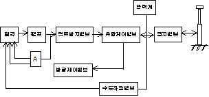
- 제어밸브
- 릴리프밸브
- 게이트밸브
- 솔레노이드밸브
(정답률: 52%)
35. 전동기의 이상상태로 볼 수 없는 것은?
- 회전하는데 소리가 나지 않는다.
- 전동기 본체부분에 균열이 약간 있다.
- 전동기 축부분에 이상음이 생긴다.
- 전동기 외함에 전류가 흐른다.
(정답률: 67%)
36. 다음 설명 중 옳은 내용은?
- 카가 최하층에 수평으로 정지되어 있는 경우, 카와 완충기의 거리에 완충기의 행정을 더한 수치는 균형추의 꼭대기 틈새보다 작아야 한다.
- 카가 최하층에 수평으로 정지되어 있는 경우, 카와 완충기의 건리에 완충기의 행정을 더한 수치는 균형추의 꼭대기 틈새의 2배이어야 한다.
- 카가 최하층에 수평으로 정지되어 있는 경우, 카와 완충기의 거리에 완충기의 행정을 더한 수치는 균형추의 꼭대기 틈새와 같아야 한다.
- 카가 최하층에 수평으로 정지되어 있는 경우, 카와 완충기의 거리에 완충기의 행정을 더한 수치는 균형추의 꼭대기 틈새의 3배이어야 한다.
(정답률: 41%)
37. 에스컬레이터 회로의 사용전압이 400V 이하인 것의 접지저항은 몇 Ω 이하이어야 한는가?
- 10
- 100
- 300
- 500
(정답률: 51%)
38. 에스컬레이터의 유지관리에 관한 설명으로 옳은 것은?
- 계단식 체인은 굴곡반경이 적으므로 피로와 마모가 크게 문제시 된다.
- 계단식 체인은 주행속도가 크기 때문에 피로와 마모가 크게 문제시 된다.
- 구동체인은 속도, 전달동력 등을 고려할 때 마모는 발생하지 않는다.
- 구동체인은 녹이 슬거나 마모가 발생하기 쉬우므로 주의해야 한다.
(정답률: 73%)
39. 트랙션 방식의 권상용 와이어 로프를 카 한 대에 3본 이상으로 하는 가장 큰 이유는?
- 시브의 마찰력을 적게 하기 위하여
- 위험률을 분산시키기 위하여
- 드럼식 승강기에 비해 로프의 마모가 적기 때문에
- 미관상 좋게 하기 위하여
(정답률: 52%)
40. 총 행정거리를 운행하는데 소요되는 시간을 초과하여 어떠한 이상현상으로 전동기가 계속 작동하는 것을 방지하기 위한 장치는?
- 공회전 방지장치
- 리미트스위치
- 스톱퍼
- 역지장치
(정답률: 46%)
41. 승강장 문의 로크 및 스위치 검사시 적합지 않은 것은?
- 승강장 문은 외부에서 열 수 없도록 로크장치의 설치 상태가 견고하여야 한다.
- 승강장 문이 열려 있거나 닫혀 있지 않은 경우 도어 스위치는 열려 있어야 한다.
- 승강장 문의 인터록장치는 로크가 걸린 후에 도어 스위치를 닫아야 한다.
- 승강장 문의 도어 스위치가 확실히 열리기 전에 로크가 벗겨져야 한다.
(정답률: 47%)
42. 정격속도 120㎜/min로 운행하는 로프식 엘리베이터의 꼭대기 틈새와 피트 깊이는?
- 꼭대기 틈새 1.6m 이상, 피트 깊이 1.8m 이상
- 꼭대기 틈새 1.8m 이상, 피트 깊이 2.1m 이상
- 꼭대기 틈새 2.0m 이상, 피트 깊이 2.4m 이상
- 꼭대기 틈새 2.3m 이상, 피트 깊이 2.7m 이상
(정답률: 49%)
43. 감속기의 기어 치수가 제대로 맞지 않을 때 일어나는 현상이 아닌 것은?
- 기어의 강도에 악 영향을 준다.
- 진동 발생의 주요 원인이 된다.
- 카가 전도할 우려가 있다.
- 로프의 마모가 현저히 크다.
(정답률: 49%)
44. 카 정격속도가 60m/㎜ 이하인 승강기에 사용되는 비상 정지장치를 위한 조속기는 카 속도의 몇 %에서 작동(Trip)하도록 설정되어야 하는가?
- 전기적 속도 : 130%, 기계적 속도 : 140%
- 전기적 속도 : 120%, 기계적 속도 : 135%
- 전기적 속도 : 150%, 기계적 속도 : 140%
- 전기적 속도 : 140%, 기계적 속도 : 150%
(정답률: 39%)
45. 최하층 종점스위치(final limit switch)의 작동은?
- 카가 완충기에 접촉된 후 작동하여야 한다.
- 카가 최하층 바닥을 지나면 즉시 작동하여야 한다.
- 카가 완충기에 접촉하기 전에 작동하여야 한다.
- 하강 제한스위치보다 먼저 작동하여야 한다.
(정답률: 45%)
4과목: 기계,전기기초이론
46. 전동 덤웨이터의 안전장치에 대한 설명 중 옳은 것은?
- 출입구 문에 사람의 탑승금지 등의 주의사항은 부착하지 않아도 된다.
- 도어 인터록 장치는 설치하지 않아도 된다.
- 로프는 일반 승강기와 같이 와이어 로프 소켓을 이용한 체결을 하여야 만 한다.
- 승강로의 모든 출입구 문이 닫혀야만 카를 승강 시킬수 있다.
(정답률: 63%)
47. 피치원의 지름을 D(㎜], 모듈을 m 이라 하면, 잇수 Z 는?
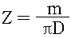
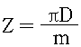
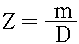
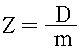
(정답률: 30%)
48. 3상 유도전동기의 회전방향을 바꾸기 위한 방법은?
- 3상에 연결된 3선을 순차적으로 전부 바꾸어 주어야 한다.
- 2차 저항을 증가시켜 준다.
- 1상에 SCR을 연결하여 SCR에 전류를 흐르게 한다.
- 3상에 연결된 임의의 2선을 바꾸어 결선한다.
(정답률: 73%)
49. “회로망에서 임의의 접속점에 흘러 들어오고 흘러 나가는 전류의 대수합은 0 이다.”라는 범칙은?
- 키르히호프의 법칙
- 가우스의 법칙
- 쥴의 법칙
- 쿨롱의 법칙
(정답률: 65%)
50. 인장(압축)응력 σ 에 관한 공식으로 옳은 것은? (단, P : 집중하중, A : 단면적, W : 등분포항중, λ : 변형량, ℓ : 평면간 거리이다.)
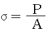
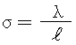
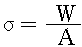
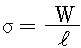
(정답률: 36%)
51. 다음의 계측기 중 측정물에 직접 접촉하지 않고 측정이 가능한 계측기는?
- 오실로스코프
- 마이크로미터
- 절연저항계
- 스트로보스코프
(정답률: 37%)
52. 그림에서 A 지점의 반력은 몇 ㎏ㆍ 중 인가?
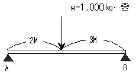
- 200
- 400
- 600
- 800
(정답률: 38%)
53. 다음 중 부하의 변화에 대한 회전속도의 변동이 적은 정속도 전동기에 속하는 것은?
- 타여자전동기
- 직권전동기
- 분권전동기
- 가동복권전동기
(정답률: 49%)
54. 다음 중 회로 시험기로 측정할 수 없는 것은?
- 직류 전류
- 직류 전압
- 저항
- 주파수
(정답률: 67%)
55. 어떤 백열전등에 100V 의 전압을 가하면 0.2A 의 전류가 흐른다. 이 전등의 소비전력은 몇 W 인가? (단, 부하의 역률은 1이다.)
- 10
- 20
- 30
- 40
(정답률: 75%)
56. 그림의 회로에서 전류 I1은 약 몇 A 인가?
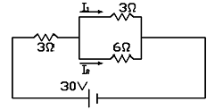
- 2
- 3
- 4
- 5
(정답률: 27%)
57. 보통 캠의 회전수가 100rpm 이상인 경우 압력각은 얼마로 하는가?
- 30도 이하
- 30도 이상
- 45도 이하
- 45도 이상
(정답률: 33%)
58. 양질의 그리스를 선정하는 방법으로 틀린 것은?
- 산화성이 좋을 것
- 내열성, 내수성이 좋을 것
- 적당한 점도를 가지고 있을 것
- 내하중성 및 내마모성이 좋을 것
(정답률: 49%)
59. PNP형 트랜지스터의 기호는?
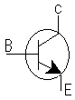
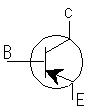
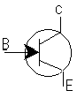
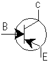
(정답률: 54%)
60. 표와 같은 진리치표에 대한 논리회로는?
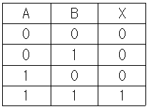
- OR
- NOR
- AND
- NAND
(정답률: 56%)